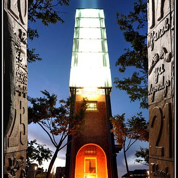
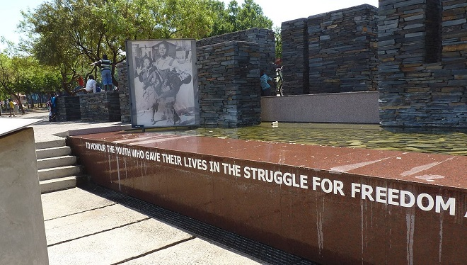

Plettenberg Bay, often known as Plett, is the town of the Bitou Local Municipality in South Africa's Western Cape Province. It's simple to understand why this resort town draws so many visitors, with scenic mountains and stunning white beaches bordering the dark blue ocean. Although it may get busy, the town has a laid-back vibe, and whale viewing is excellent during the breeding season. The city, which is located on the Garden Route, is well worth a visit because of the variety of outdoor activities available.
Historic places in Johannesburg
Credo Mutwa Cultural Village in Soweto

More than a museum, the Credo Mutwa cultural village is an outdoor experience rich in history and African mythology. It is made up of sculptures and structures by African artist Credo Mutwa. Mutwa was also a traditional healer with the ability to foresee the future, as seen by his statues depicting the AIDS pandemic. In 2006, the village began a rehabilitation project and is located in the heart of Soweto. A visit to the village is a trip through the life of this fascinating sangoma and his conservation efforts, as well as a demonstration of the importance of traditional African culture in the metropolitan environment.
Constitution Hill Human Rights Precint in Johannesburg

Constitution Hill, a living museum in the heart of Johannesburg, was constructed on the 100-acre site of a century-old prison complex, which previously housed the leaders of every major South African liberation movement, from Nelson Mandela to Mahatma Gandhi. Visitors may now take a tour of the region and its numerous attractions to learn more about South Africa's difficult history and democratic transition.
Hector Pieterson Memorial and Museum in Soweto

This museum is a symbol of the youth's resistance to Apartheid, dedicated to and in memory of Hector Pieterson and others who lost their lives in the battle for freedom during the 1976 Student Uprising in Soweto.The museum contains unsettling evidence in the form of testimonies, photographs, multimedia exhibits, and papers relating to the events of that day.The sights, sounds, and atmosphere will make you feel as though you're right in the thick of the revolt and its gory aftermath.